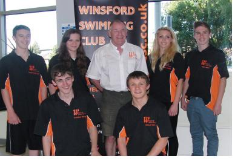

|
||||
Success at National Age Group 2014 The National Championships in Sheffield is where the very fastest swimmers in Britain age 12-14 battle it out for National honors. The qualifying times are very tight and so to achieve a NQT is a great achievement in itself however we were not going there just make up the numbers. Both Alisha and Adam were going there to perform and that is what they did. First up was Adam Blackshaw in the boys 14 years 200 Fly. As you all know Adam lives for Fly and so it was no surprise that Adam swam very well. After 4 laps of the 50m pool he touched home in a time of 2.21.31, just shy off his PB however this was his fastest ever heat swim and it was a well fought race, coming well placed in his heat. Adam's overall placing was 17th which is a fantastic achievement. Adam's improvement in his swimming over the past season has been remarkable from not qualifying for the regional's to qualifying for the Nationals is brilliant and it just shows that all Adam's effort and commitment in training has paid off. Adam has already told me his targets for next season, unfortunately I can't tell you, confidential between swimmer and coach but needles to say after tasting National racing the experience has provided him with even more motivation for next season. Well Done Adam. Next up was Alisha in the 800 Free. Unfortunately I couldn't be there (Brothers wedding!) but Dave was pool side supporting Alisha on her swim. Alisha as always gave it her all and after 16 x 50m lengths she came away with a fantastic result of 9.34.71 a 3 second PB. Alisha went into the 800 ranked 22nd but came away with a 17th place, a fantastic achievement for her first ever National swim, sorry I wasn't there. Alisha's next race was the 400 Free, I was there this time! Alisha again swam to her best but unfortunately couldn't execute the race to perfection however it was valuable experienced gained and also it provided us all with a lot more determination to perform the following day in the Open Water. Alisha's final race and probably the best race I have ever seen her do was the 1500m Open water swim. In Alisha's 13 year old race there were 17 swimmers racing. The race was stacked with talent, many Regional Champions were there, last years National Gold and Silver Medalist were there and this seasons National Champion over the 800m was also taking part, plus many more 800m finalist, so the field was very, very strong. The course was swum over 2 laps of 750m and it proved to be a very tight and competitive race with many bumps along the way! It was clear to see from the off this was going to be a physical race with all girls jostling for position but after around 500m it was clear to see that there was pack of around 6 girls out front, fighting it out, Alisha being one of them. Throughout the race there was positions changing all the time but after the last turn and leading into the last 200m Alisha was in 4th place but with a bit of help from cheering spectators Alisha managed to overtake the girl in 3rd place and touched home in BRONZE MEDAL position, 2 seconds clear of the 4th placed girl, had the course been another 5m longer a Silver would have been gained. Alisha had a superb sprint finish. Alisha gained a time of 19 minutes 25 seconds just 1 second off Silver and over 2 minutes faster than her race in Salford at the Regional Championships in June. This was a fantastic achievement to gain a National Bronze Medal and a place on the podium in a super strong field. This was Winsford SC first ever National Age Group Open Water National Medal. Well Done Alisha. As I type this the National Youth Championships will be taking place in Sheffield so we would like to wish all our swimmers: Individual qualifiers: Ashley Hogg, Oliver Rose and Team qualifiers: Ashley Hogg, Brandon Sharkey, Callum Chapple & Alex Law and Dave all the very best for the week. Please keep looking at the web-site as Dave will write a full report on the Youth Champs plus a full report on Ashley Hoggs fantastic BRONZE medal success in the 2000m Open Water swim. Overall the National Age Groups were hugely successful for Alisha and Adam they both raced with great courage. I know there are others at Winsford SC who can gain qualification next season, I honestly believe that. Believe in yourself and work Hard and anything is possible. We achieve together. IMAGINE with all your mind. BELIEVE with all your heart. ACHIEVE with all your might. - Dan.
National Swimming Championships 2012 Opening the event at Youth level for Winsford will be Vicky Cunningham and Jessica Gallimore. Both of these swimmers have competed at these championships before and are expected to do well in their respective events. Vicky has qualified for the 50m, 100m, & 200m Freestyle and Jessica in the 100m Backstroke. Sadly to say, this will be Vicky’s last National event as a Winsford swimmer, Vicky will be going to Loughborough University after the summer and will train and compete with the very successful Loughborough Swim Team, there is some good news though, Vicky will retain her membership as a Winsford Swimmer and will compete for us in the forthcoming Arena League. Swimming in their first ever championships at Age Group level, will be Ashley Hogg, Sam James, Brandon Sharkey and Cameron Jones Ashley Hogg (14yrs) will lead the quartet of boys, when he compete in seven individual events plus three team events. Individual events as follow: - 400m/1500m Freestyle – 200m/400m Individual Medley – 100m/200m Butterfly – 200m Breaststroke. Sam James, Brandon Sharkey & Cameron Jones along with Ashley Hogg will make up the boys 11 – 14yrs relay team. The boys had qualified for the 4 x 200m/4 x 100m Freestyle team event and the 4 x 100m Medley team event. As head coach, I’m delighted to be part of a very successful team and club and would like to take this opportunity to thank all those who have assisted me over the past year, in making Winsford ASC one the most progressive and successful club in the Northwest Region . Good luck to all my National Swimmers |
|||||||
 |
|||||||